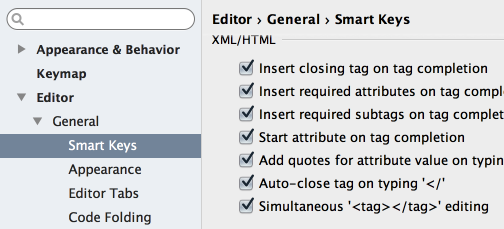

Did you know that you can edit both opening and closing tags in XML/HTML files ?
Make sure to select the check box Simultaneous <tag></tag> editing in the Smart keys page of the Editor settings/preferences.
